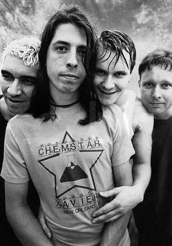
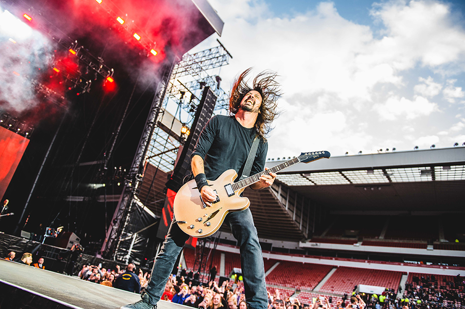
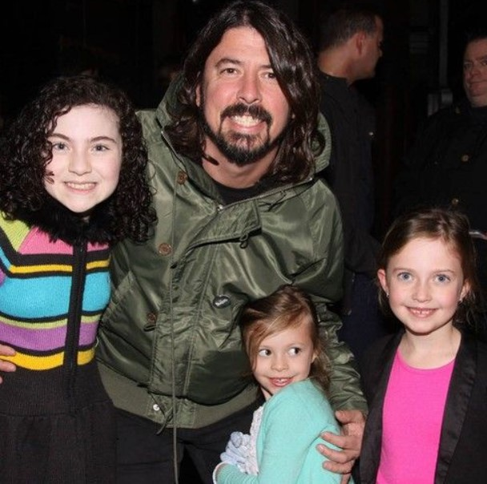
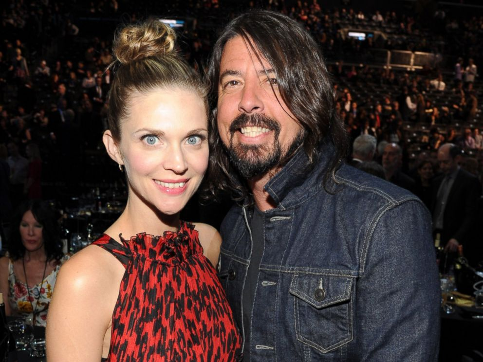
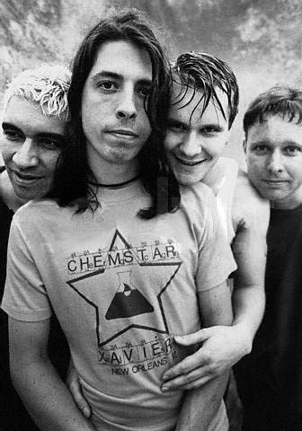
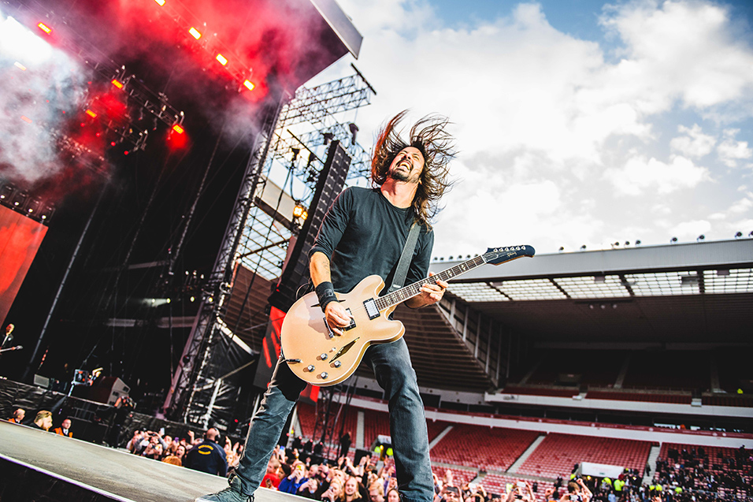
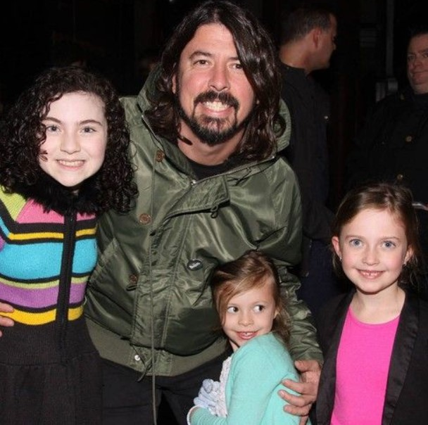
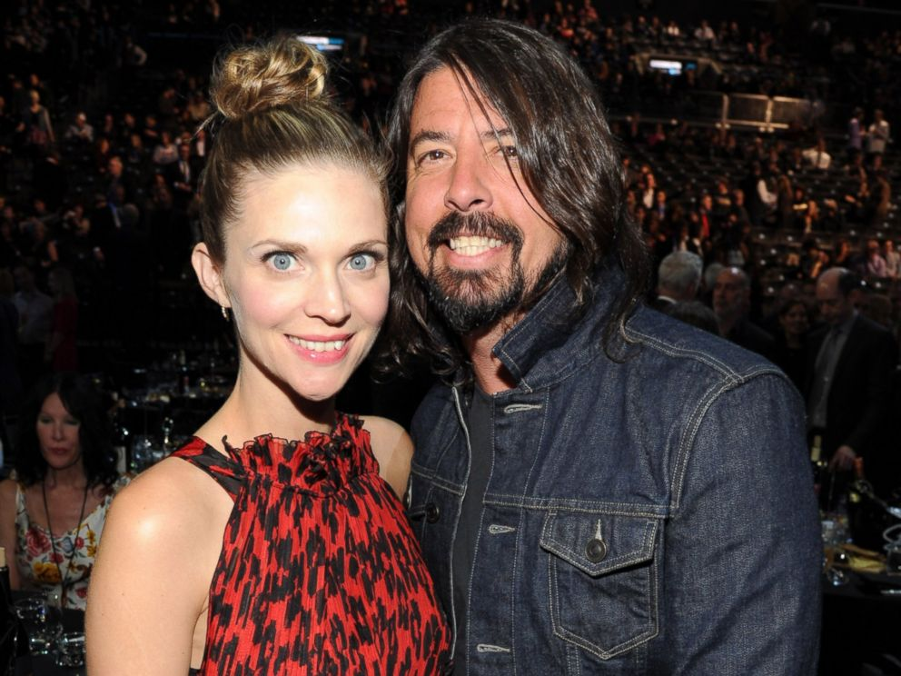

“No one is you, and that is your power.”
Early Life
Grohl was born on January, 14, 1969, in Warren, Ohio. His family then moved to Springfield, Virginia. Three years after moving here, his parents divorced and so Grohl grew up with his mother. At the age of 12, Grohl experimented with the guitar and took some guitar lessons but lost interest in them. After he went to stay with his cousin for a while, he was influenced by punk rock and built a great interest in this genre. He began playing drums in the 1980s and played for punk rock bands in Washington, DC area. Among his first bands was Freak Baby, which later came to be known as Mission Impossible and later changed again to Fast. When this band broke up, he joined Dain Bramage, but when he heard of the Scream band auditions he went to try his luck. Surprisingly he passed and at 17, Grohl became the drummer for Scream. Grohl dropped out of high school and toured with the band throughout the U.S. in 1987 and later in Europe.
Nirvana
In 1990 when Scream disbanded abruptly, Grohl joined Nirvana who had already released their first album, Bleach. Grohl soon started working with the group to produce a follow up album Nevermind. Nevermind become an instant hit, breaking into the top of the charts world wide and catapulting Nirvana’s popularity on an instance.
But even with the success, Grohl didn’t feel secure at Nirvana. He felt that he was just another drummer who can be replaced anytime. He was a songwriter too, but didn’t feel compelled to introduce his songs to the group. Rather, he thought it wise to let the band flow with their trend and therefore compiled his songs in an album called Pocket Watch, which he released in 1992. But the cassette was released under a pseudonym, Late! Nirvana went on to release Incesticide, which was a collection of B-sides and demos, and then came In Utero, released on September 21, 1993, and widely considered to be Nirvana's masterpiece. But following the death of Kurt Cobain, the band disbanded.
After the demise of Cobain, Grohl was so heartbroken that he didn’t have any drive to continue playing. He had lost a great friend who had helped him a lot in his career and who had even helped him to do some music he wanted to release later. But with the help of his friend, Grohl went back to music again. He had a short stint with Tom Petty and the Heartbreakers, and also toured Australia with Pearl Jam. He then called in his friends to form Foo Fighters. The other members of the band were Pat Smear, Nirvana's second guitarist, and former Sunny Day Real Estate members Nate Mendel (bass) and William Goldsmith (drums).
Foo Fighters
The work on first album for the Foo Fighters was started by Grohl when he wanted to make a demo. He ended up making 15 songs and he played all the instruments (except for Greg Dulli's (the lead singer of Afghan Whigs) guitar part on the song "X-Static) on the album, which was called Foo Fighters and was released on July 4, 1995. Foo Fighters fared very well and their hit singles: "This Is A Call," "I'll Stick Around," and "Big Me." Grohl's songs were dominating the charts around the world. The band had taken off in a big way and was even asked to provide a song for the TV series, The X-Files. Grohl and his then wife Jennifer Youngblood also made an appearance in one of the X-Files episodes.
Over the years, Grohl has recorded with other bands, including Queens of the Stone Age and Tenacious D, but he continues to circle back to the Foo Fighters. The group has since released Wasting Light (2011), Sonic Highways (2014) and Concrete and Gold (2017), claiming a Best Rock Song Grammy in 2018 for "Run."
personal life
Grohl married Jennifer Leigh Youngblood, a photographer from Grosse Pointe, Michigan, in 1994 and later divorced in 1997, after separating in December 1996.On August 2, 2003, he married Jordyn Blum and they have three daughters: Violet Maye (born April 15, 2006), Harper Willow (born April 17, 2009), and Ophelia Saint (born August 1, 2014).
In 2012, Grohl was estimated to be the third wealthiest drummer in the world, behind Ringo Starr and Phil Collins, with a fortune of $260 million.
Grohl does not read music and plays only by ear.


 






